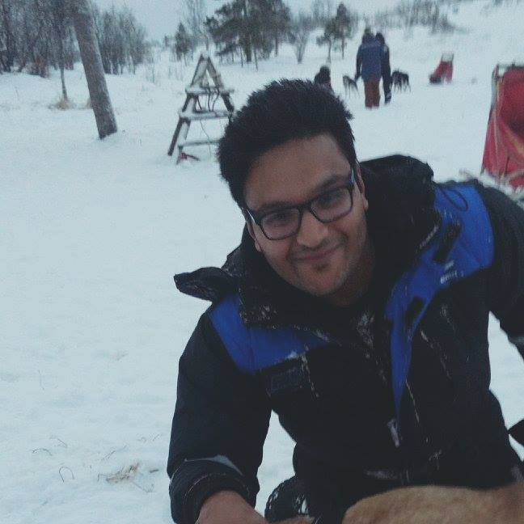
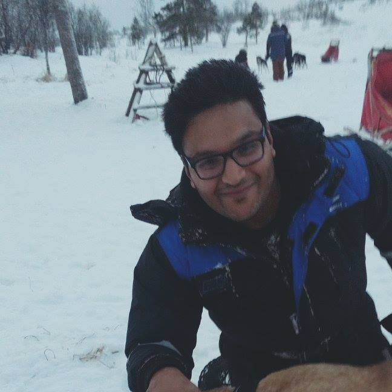

Abhishek Jain
Born and Brought up in New Delhi. I am down to earth, humble and disciplined in nature.
Brief About Me:
- Caste: Jain, Sthanakvasi, Punjabi
- Gotra: Duggad
- DOB: 5th September 1991 , 10:15 pm. New Delhi
- Height: 167 cm / 5'6 ft
- Build: Strong Athletic Type
- House: Self-owned
Experience : 4+ Years in IT Industry
Current CTC: 10.5 Lac Per Annum
APPLICATION SUPPORT EMEA TEAM LEAD & L3 Expert
Leading Application support team of 4 people in EMEA (Europe) Region and also working as L3 Application support engineer. Involved with communicating with customer across multiple regions. Currently working from home for Ephesoft Inc.
Senior System Engineer
Working as a Senior Software Engineer. Providing L3 and L2 level of Technical Application support in EU, APAC and US regions. Currently supporting projects developed over technologies like Mobile , Java and Big data. Involved with communicating with customer across multiple regions.
System Engineer
First organization that I have joined as a System Engineer. Worked at different places like Mysore, Banglore & Chandigarh under different projects.
Education
KIIT College of Engineering, Gurgaon
Pursued B.Tech in Computer Science from KIIT College of Engineering. Qualifying my under-grad degree with 76%
VVDAV Public School, New Delhi
Completed my schooling from VVDAV Public School, Vikas Puri, New Delhi. Pursued Non-Medical with Information Technology as additional subject and completed 12th with 78%
About Family
Family Details & Background
- FATHER:
- MOTHER:
- SISTER'S & BROTHER IN LAW'S:
- Mrs. Sheetal Jain
- Mrs. Vandana Jain
- Mr. Paras Jain
- Mr. Hemant Jain
- GRANDPARENTS
- PATERNAL GRANDFATHER
- PATERNAL GRANDMOTHER
- MATERNAL GRANDFATHER
- MATERNAL GRANDMOTHER
- UNCLE's
- Mr. Ajit Kumar Jain
- Mr. Arun Jain
- TARSEV JAIN
- Lt. Shri Subhash Chandra Jain
- Shri Prafulat Jain
- Shri Azad Kumar Jain
Mr. Adish Jain is born and brought up in Delhi. He holds a degree in B.SC from Delhi University. He started his own business in the field of Manufacturing of Electrical Accessories. He is currently enjoying a peaceful and retired life.
Mrs. Raj Kumari Jain is born and brought up in Delhi. She holds a degree in M.A (Hindi) from Delhi University. She is a house wife.
Sheetal Jain is the eldest sister among three of us. She holds a degree in B.ED ,M.COM and MBA. She is currently working as Senior Secondary Teacher and Head of Department of Commerce Section in Jamnabai Narsee School. She is married to Mr. Paras Jain and is currently residing in Santacruz (W) Mumbai. She is having a 14 year old daughter named Uvieka Jain
Vandana Jain is married and currently residing in L.A, USA. She is married to Mr. Hemant Jain from Chandigarh. She holds a degree in MPT (Master's in Physiotherapay). She is blessed with two daughters , Samaira Jain & Zara Jain
Married to Sheetal Jain and has his own business setup in Mumbai
Married to Vandana Jain and is currently working in Infosys as a Project Manager
Lt. Shri Master Chaman Lal Jain from Pasroor (Pakistan).
Lt. Smt. Dwarki Devi Jain from Gujrawala (Pakistan).
Lt. Shri HIRA Lal Jain from Saiyalkot (Pakistan)
Lt Smt. Ram Pyari Jain from Saiyalkot (Pakistan).
PATERNAL UNCLE's
Ajit Jain is second of three brother. He is now retired and used to be Genral Manger in State Bank of India. He resides in Delhi and is married to Mrs. Sunaina Jain
Arun Jain is youngest of three brother. He is a Manager in Bank of Baroda. He resides in Delhi and is married to Mrs. Neelam Jain
Retired LIC Officer
Owned his own business
Owned his own business.
Owned his own business.
Interests
Apart from being a dedicated working professional and computers being my primary interest, I enjoy my time in various outdoor activities and traveling. I like to travel to explore new places , a foodie , like to indulge in adventure activities.
I like to spend time with my friends, good at outdoor and indoor games like pool, badminton, bowling, chess and have recently developed a habit of running. Like to enjoy high octane activities. Other than above I am a good cook. I like to drive and listening to music and watching english TV series / movies in my spare time.
PHOTOS
 
